Maintenance
This document describes the routine and extraordinary maintenance procedures for Donatoni machines, providing instructions for correctly carrying out inspections, checks and scheduled maintenance operations.
The purpose is to preserve machine efficiency and reliability, prevent possible faults and reduce the risk of unexpected downtime.
- STANDARD BRIDGE SAWS
- LUBRICANT COMPARISON TABLE
- MN0001 EMERGENCY CIRCUIT TEST
- MN0002 MONTHLY VACUUM PUMP MAINTENANCE
- MN0003 SIGNAL LIGHT FUNCTION TEST
- MN0004 GREASING MOVE SYSTEM LINEAR GUIDES
- MN0005 GREASING Z-AXIS BALL NUT BEARING
- MN0006 GREASING Y-AXIS BRIDGE TRANSMISSION SHAFT BEARINGS
- MN0007 CHECKING THE AUTOMATIC GREASING SYSTEM LUBRICANT
- MN0008 GREASING TILTING WORKTABLE JOINTS
- MN0009 GREASING CONSOLE ARM JOINT
- MN0010 CHECKING HYDRAULIC SYSTEM PIPES AND FITTINGS
- MN0011 HYDRAULIC POWER UNIT OIL CHANGE
- MN0012 CLEANING ELECTRICAL CABINET FILTERS
- MN0013 COMPRESSED AIR INLET UNIT MAINTENANCE
- MN0014 ELECTROSPINDLE BEARINGS
- MN0041 GREASING TOOL PLUS SIDE SPINDLE LINEAR GUIDES
- MN0042 CLEANING PNEUMATIC SYSTEM FILTER
- MN0043 CHECKING ROTARY UNION SEAL
- WATERJET
- MN0044 ORIFICE REPLACEMENT
- MN0045 MANUAL GREASING
- MN0039 CLEANING ELECTRICAL CABINET VENT FILTERS
- MN0015 CHECKING HIGH-PRESSURE SYSTEM PIPES AND FITTINGS
- MN0030 CHECKING THE AUTOMATIC GREASING SYSTEM LUBRICANT
- MN0016 CHECKING TANK CLEANLINESS AND DRAINING
- MN0035 CHECKING WATER QUALITY
- MN0040 COMPRESSED AIR INLET UNIT MAINTENANCE
- BFT PUMP
- DONATONI HYDROX PUMP
- HYPERTHERM PUMP
- HIGH-PRESSURE POPPET ASSEMBLY
- MN0029 REPAIRING THE BLEED VALVE
- MN0017 REPAIRING THE CHECK VALVES AND LOW-PRESSURE POPPETS
- MN0018 REPAIRING THE HIGH-PRESSURE CYLINDER
- MN0019 REPLACING THE HIGH-PRESSURE SEAL ELEMENT CARTRIDGE
- MN0021 REPLACING THE LOW-PRESSURE POPPET
- MN0022 REVERSING THE HIGH-PRESSURE CYLINDER
- MN0023 REPLACING THE HIGH-PRESSURE CYLINDER
- MN0024 REPLACING THE CHECK VALVE ASSEMBLY
- MN0025 REPLACING THE SEAL ELEMENT HOUSING ASSEMBLY
- MN0026 REPLACING THE OUTLET ADAPTER
- MN0028 REPAIRING THE CENTRAL HYDRAULIC SECTION
- MN0034 REPLACING THE WATER FILTER
- MN0031 REPLACING THE BLEED VALVE BODY
- MN0032 CLEANING THE AIR COOLER
- MN0036 REPLACING THE HYDRAULIC FILTER ELEMENT
- MN0037 REPLACING THE HYDRAULIC FLUID
- MN0038 LUBRICATING THE PRIMARY MOTOR BEARINGS
- MN0020 REPLACING THE HIGH-PRESSURE POPPET ASSEMBLY
- MN0047 FOCUSER REPLACEMENT
- MN0053 ABRASIVE HOSE REPLACEMENT
- SAFETY INSTRUCTIONS
List of standard maintenance tasks for a JET625-type bridge saw


Before proceeding, carefully read the | |
Interval200 working hours | Operation complexityLow01 / 05 |
Authorized personnelMachine operator | Required PPE:  |
Video
Procedure
With the machine switched on and set up to operate in access-to-hazardous-area mode, press the emergency stop button and check:
That the “EMERGENCY ACTIVE” status is displayed on the control panel monitor
That the red section of the signal light on the control panel switches on.
That operating any of the machine axes using the hold-to-run levers on the control panel does not cause any movement inside the machine.
Restore machine operation and check:
That the “EMERGENCY ACTIVE” indication disappears from the control panel monitor.
That the red section of the signal light on the control panel switches off.
That operating any of the machine axes using the hold-to-run levers on the control panel causes the corresponding movement inside the machine
Before proceeding, carefully read the SAFETY INSTRUCTIONS ⚠️ | |
Intervalevery week; every month | Operation complexityLow01 / 05 |
Authorized personnelMachine operator | Required PPE:  |
Video
Procedure
Keeping the vacuum pump in good condition depends on the cleanliness of the water in the water system. The purchaser is responsible for ensuring that the characteristics of the water used comply with the requirements of the pump manufacturer's operation and maintenance manual.
Every week:
Check that the water level in the tank reaches the level of the overflow drain pipe
If the vacuum system is used only occasionally, operate the vacuum pump weekly using the vacuum activation command (refer to section B of the “Operating Instructions” manual supplied with this manual)
Every month:
Thoroughly clean the tank, removing any sediment deposits accumulated on the bottom
For more detailed information on vacuum pump maintenance, refer to the operation and maintenance manual
120113044828_Manuale_Vuoto_Italiano.pdf
Before proceeding, carefully read the | |
Interval— | Operation complexityLow01 / 05 |
Authorized personnelMachine operator | Required PPE:  |
Images
Procedure
Orange section test of the signal light:
Set the machine to operate in access-to-hazardous-area mode as described in the chapter - ACCESS-TO-HAZARDOUS-AREA MODE and check that the orange section of the signal light flashes.
Set the machine to operate in “slow mode” (refer to section B of the “Operating Instructions” manual supplied with this manual) and check that the orange section of the signal light is steadily lit.
Green section test of the signal light:
Set the machine to operate in working mode as described in the chapter - WORKING MODE, operate any machine axis using the hold-to-run levers on the control panel (refer to section B of the “Operating Instructions” manual supplied with this manual) and check that the green section of the signal light flashes during movement
Red section test of the signal light:
Press the emergency stop button on the control panel and check that the red section of the signal light flashes.
NOTE: to restore machine operation, proceed as described in the manual
Before proceeding, carefully read the | |
Intervalevery 300 working hours | Operation complexityLow01 / 05 |
Authorized personnelMachine operator | Required PPE:  |
Video
Images

Procedure
At least every 300 working hours, use a suitable grease gun to grease the MOVE system linear guides with 1cm3 of grease through the grease nipples shown in the figure

Before proceeding, carefully read the | |
Intervalevery 300 working hours | Operation complexityLow01 / 05 |
Authorized personnelMachine operator | Required PPE:  |
Images

Procedure
At least every 300 working hours, use a suitable grease gun to grease the Z-axis ball nut bearing with 1 cm3 of grease through the grease nipple shown in the figure
The grease nipple is located on the right side of the quill, underneath the guard shown in the figure, and is positioned as indicated and highlighted in the image.

Before proceeding, carefully read the | |
Intervalevery 300 working hours | Operation complexityLow01 / 05 |
Authorized personnelMachine operator | Required PPE:  |
Video
Image

Procedure
At least every 300 working hours, use a suitable grease gun to grease the Y-axis transmission shaft bearings with 1 cm3 of grease through the grease nipples shown in the figure

Before proceeding, carefully read the | |
Intervalevery 300 working hours | Operation complexityLow01 / 05 |
Authorized personnelMachine operator | Required PPE:  |
Images

Procedure
The automatic greasing system consists of an automatic unit that lubricates the connected points according to the programmed schedule.

The reservoir must be topped up with the required grease without exceeding the indicated maximum level.
At least every 500 working hours, check the grease level in the reservoir and top it up when necessary using the correct type of grease
N.B. An on-screen alarm warns the operator when the grease level has reached the minimum level in the reservoir and topping up is therefore required.
Device-specific manual
Before proceeding, carefully read the | |
Intervalevery 6 months | Operation complexityLow01 / 05 |
Authorized personnelMachine operator | Required PPE:  |
Video
Images

Procedure
At least every 6 months, use a suitable grease gun to grease the tilting worktable joints with 1cm3 of grease through the grease nipples shown in the figure.
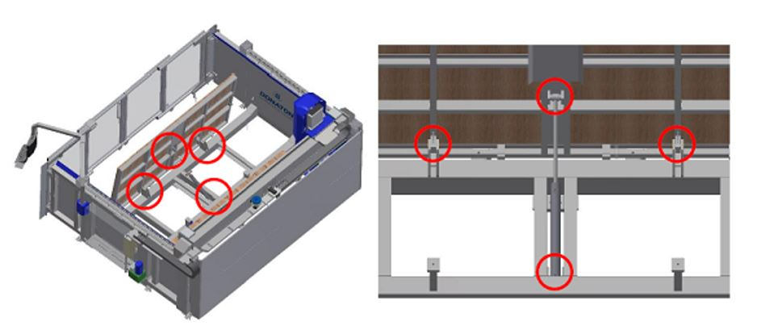
Before proceeding, carefully read the | |
Interval— | Operation complexityLow01 / 05 |
Authorized personnelMachine operator | Required PPE:  |
Before proceeding, carefully read the | |
Intervalevery year = 8760 h | Operation complexityLow01 / 05 |
Authorized personnelMachine operator | Required PPE:  |
Before proceeding, carefully read the | |
Intervalevery 2000 working hours | Operation complexityLow01 / 05 |
Authorized personnelMachine operator | Required PPE:  |
Video
Procedure
As a rule, the oil must be changed at least every 2000 working hours; replacement must be accompanied by thorough cleaning of the reservoir.
Drain the oil through the lower plug (pos B in the figure). Fill the reservoir with fluid through a 10 micron mesh filter via the filler cap (pos A in the figure)

Before proceeding, carefully read the | |
Intervalevery 2000 working hours | Operation complexityLow01 / 05 |
Authorized personnelMachine operator | Required PPE:  |
Procedure
Operations
Turn switch A to the OFF position | 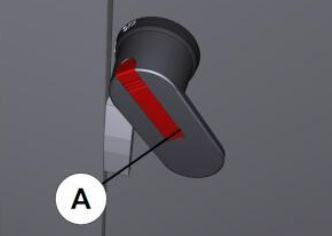 |
Open doors D and E |  |
Remove guard F and filter G | 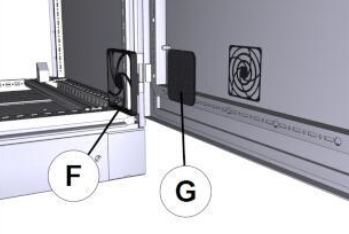 |
Clean the filter using a jet of compressed air H |  |
Restore the components by carrying out the procedure in reverse order |
Before proceeding, carefully read the | |
Interval— | Operation complexityLow01 / 05 |
Authorized personnelMachine operator | Required PPE:  |
Before proceeding, carefully read the | |
Intervalevery 1550 working hours | Operation complexityLow01 / 05 |
Authorized personnelMachine operator | Required PPE:  |
Before proceeding, carefully read the | |
Intervalevery 300 working hours | Operation complexityLow01 / 05 |
Authorized personnelMachine operator | Required PPE:  |
Video
Procedure
At least every 300 working hours, use a suitable grease gun to grease the MOVE system linear guides with 1cm3 of grease through the grease nipples shown in the figure

Before proceeding, carefully read the | |
Intervalevery 2000 working hours | Operation complexityLow01 / 05 |
Authorized personnelMachine operator | Required PPE:  |
Video
Maintenance-specific safety instructions
Before cleaning the filter, depressurize the system by operating the air unit shut-off valve and lock it with a padlock.
(See manufacturer's manual
Procedure
For maintenance instructions concerning the compressed air inlet unit, refer to the manufacturer's operation and maintenance manual.
Before performing maintenance operations, close the shut-off valve and lock it with a padlock.

Before proceeding, carefully read the | |
Intervalevery 500 working hours | Operation complexityLow01 / 05 |
Authorized personnelMachine operator | Required PPE:  |
Procedure
Check externally for signs of coolant leakage. In the event of leaks, replace the component with the specified spare part.
Replacement
If replacement is required, proceed as described below
Unscrew the plug |  |
|---|---|
Insert a 6mm Allen key into the central hole. |  |
Screw the rear plug back on. |  |
Area for maintenance operations accessible from the machine HMI for Waterjet-type machines.
Before proceeding, carefully read the | |
Intervalevery 70 working hours | Operation complexityLow01 / 05 |
Authorized personnelMachine operator | Required PPE:  |
Loosen (DO NOT DISCONNECT) the high-pressure hose fitting
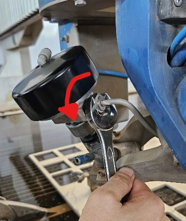
Hold the valve body stationary and unscrew the ring nut underneath

Release and move the valve

Unscrew the coupling body to access the orifice seat

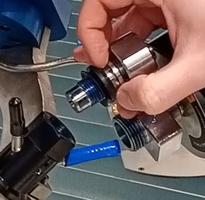
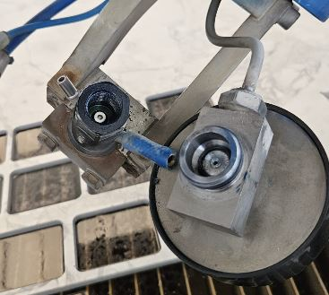
Use a small tube, pliers or another suitable tool to remove the worn orifice
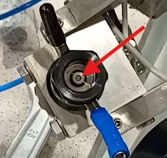
Insert the new orifice into its seat, checking the correct orientation (tapered part facing upward)

Clean the various fittings and then apply anti-seize lubricant (Blue Goop) before tightening

Reassemble in reverse order, observing the specified tightening torques
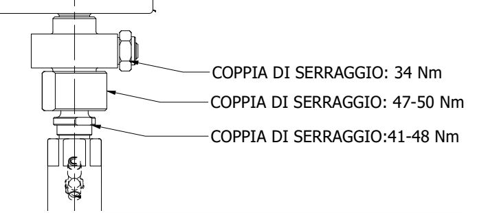
Attached documents
Video
Before proceeding, carefully read the | |
Intervalevery 300 working hours | Operation complexityLow01 / 05 |
Authorized personnelMachine operator | Required PPE:  |
Use a suitable grease gun to grease the various points listed below with 1cm3 of EP1 grease:
TOOL_ side spindle linear guides
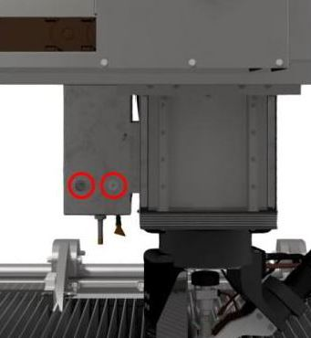
Slab probe linear guides
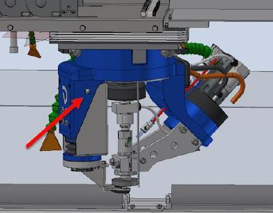
Axis A gearbox passage

Lubricant comparison table
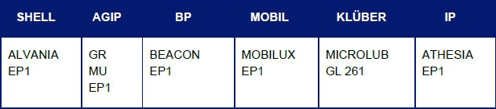
Before proceeding, carefully read the | |
Intervalevery 2000 working hours | Operation complexityLow01 / 05 |
Authorized personnelMachine operator | Required PPE:  |
Shut down the machine correctly and turn the switch to the OFF position
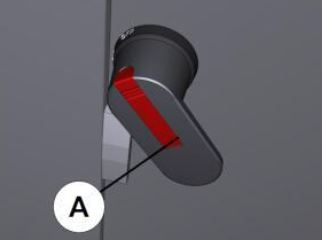
Remove the cover by releasing it from the bottom and moving it upward
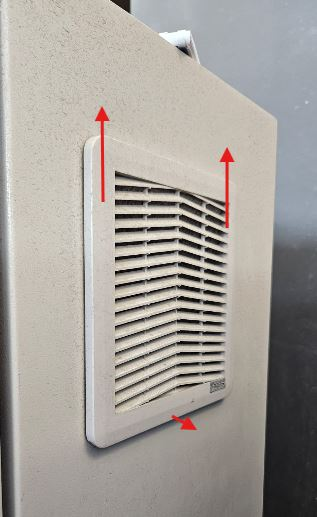

Clean the filter using an air gun
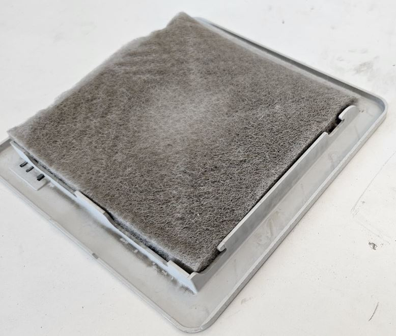
Reassemble everything by carrying out the procedure in reverse order
Before proceeding, carefully read the | |
Intervalevery 1000 working hours | Operation complexityLow01 / 05 |
Authorized personnelMachine operator | Required PPE:  |
Procedure
Position the machine in the centre of the tank. Switch on the pump and check the high-pressure pipes for leaks.
If leaks are present, switch off the pump, press the emergency stop mushroom button and eliminate the leak by tightening the fitting to the correct torque.
35 Nm for 1/4” fittings
70 Nm for 3/8” fittings
Then release the emergency stop, enable the controls and try switching the pump on again to check for any further leaks.
The HP hose diagram is available at the link below.
Before proceeding, carefully read the | |
Intervalevery 450 working hours | Operation complexityLow01 / 05 |
Authorized personnelMachine operator | Required PPE:  |
Procedure
The automatic greasing system consists of an automatic unit that lubricates the connected points according to the programmed schedule
The reservoir must be topped up with the required grease without exceeding the indicated maximum level. Top up through the dedicated connection (A in the figure)

Before proceeding, carefully read the | |
Intervalbased on abrasive consumption | Operation complexityLow01 / 05 |
Authorized personnelMachine operator | Required PPE:  |
Procedure
Check that the bridge and other machine components do not come into contact with the parts being moved
Open the drain valve to empty the tank
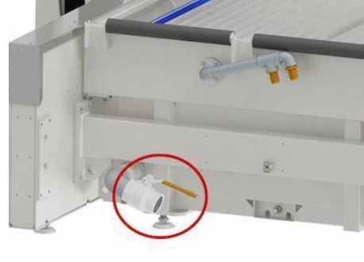
Lift the blade frame using the dedicated supports (Frame weight = 750Kg)
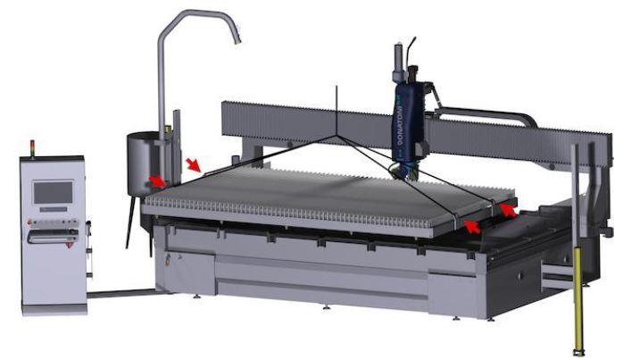
Remove the workpiece recovery grids
(OPTIONAL) Lift and empty the abrasive collection tanks. Then clean them and check their integrity
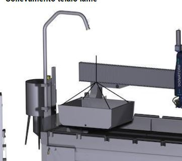
Thoroughly clean the tank, removing abrasive residue
Reposition the abrasive collection tanks, grids and blade bed
Before proceeding, carefully read the | |
Intervalevery 1000 working hours | Operation complexityLow01 / 05 |
Authorized personnelMachine operator | Required PPE:  |
Before proceeding, carefully read the | |
Intervalevery 400 working hours | Operation complexityLow01 / 05 |
Authorized personnelMachine operator | Required PPE:  |
Before proceeding, carefully read the | |
Interval— | Operation complexityLow01 / 05 |
Authorized personnelMachine operator | Required PPE:  |
Before proceeding, carefully read the | |
Interval— | Operation complexityLow01 / 05 |
Authorized personnelMachine operator | Required PPE:  |
Before proceeding, carefully read the | |
Intervalevery 150 working hours | Operation complexityLow01 / 05 |
Authorized personnelMachine operator | Required PPE:  |
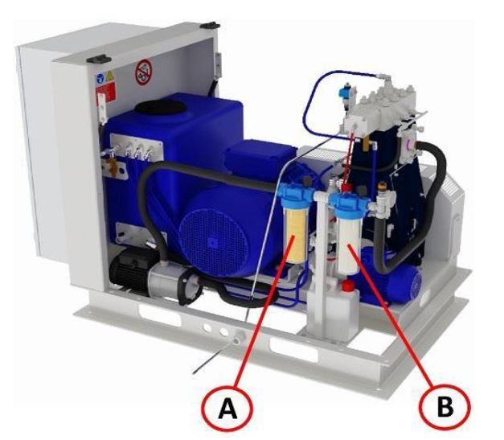
Location | Description | Filtration rating |
|---|---|---|
A | Water filter with 9/10" cartridge | 5 μm |
B | Water filter with 9/10" cartridge | 1 μm |
Check: when should they be replaced?
The filter cartridges must be replaced when the pressure drop in the system exceeds 1 bar (when the pressure difference between inlet point X and outlet point Y becomes: X-Y > 1 bar)
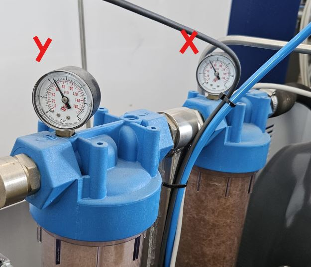
Replacement procedure
Unscrew the filter housing using the supplied wrench;
Remove the used filter cartridge;
Clean the filter housing (removing any residue or debris);
Insert the new filter cartridge (make sure the cartridge with the correct filtration rating is installed in each position);
Position the filter housing in its seat and tighten it using the wrench;
Before proceeding, carefully read the | |
Intervalmonthly | Operation complexityLow01 / 05 |
Authorized personnelMachine operator | Required PPE:  |
Check pump motor oil level
Remove the dipstick and check the level.
Also check that there is no cutting water in the “Emulsion” lubricant

Check dirty-water container
If an excessive amount of fluid or emulsion is found in the container, contact Donatoni Service srl technical support for instructions or to schedule a check of the piston pump sealing system
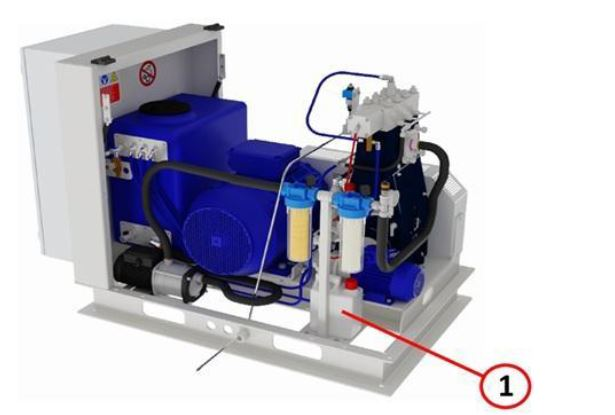
High-pressure pump intermediate chamber (visual inspection)
Check that the bellows are not damaged. In the event of damage, contact technical support
If the bellows are damaged, also check for any corrosion on the
piston rod.Check whether operating fluid is present in the intermediate space; if
so, contact technical support

Before proceeding, carefully read the | |
Interval1 year or 4 years from the second time | Operation complexityMedium03 / 05 |
Authorized personnelMachine operator | Required PPE:  |
To access the drain valve plug and filler neck, open the cover hood (A) and remove the front (C) and side (B) guards.
A suitable collection container with a capacity greater than 5litri is required to collect the oil.
Place a cloth or similar material under the oil drain plug (E).

Remove plug (D) from the oil filler neck.
To drain the oil, use the flexible hose with the dedicated supplied screw fitting. Ensure that the open end remains inside the prepared collection container
Unscrew the oil drain valve plug (E). The oil starts to flow out as soon as the flexible hose screw connection is tightened.
Check the used oil for emulsion. If emulsion is present, remove the moisture from the oil circuit.
Remove the flexible hose and screw the oil drain valve plug (E) back in.
Fill the crankcase with approximately 4.3 litres of new oil, checking the level with the dipstick.
Oil viscosity grade: PAO ISO VG 320.
A comparison table is provided at the end of the document.
 |  |

Before proceeding, carefully read the | |
Interval1 year or 4 years from the second time | Operation complexityMedium03 / 05 |
Authorized personnelMachine operator | Required PPE:  |
See page
Before proceeding, carefully read the | |
Intervalevery 1500 operating hours | Operation complexityCritical05 / 05 |
Authorized personnelDonatoni Service | Required PPE:  |
Some pump components are subject to wear; their maintenance must be carried out by appropriately trained personnel.
Maintenance must be performed on the pump head and piston/cylinder assembly. Different components must be replaced depending on the operating hours.
Contact Donatoni Service for maintenance


Before proceeding, carefully read the | |
Intervalevery 6000 operating hours | Operation complexityCritical05 / 05 |
Authorized personnelDonatoni Service | Required PPE:  |
Belt tensioning must be carried out according to precise specifications. Contact Donatoni Service for maintenance
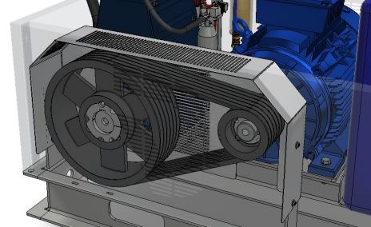
Before proceeding, carefully read the | |
Interval— | Operation complexityLow01 / 05 |
Authorized personnelMachine operator | Required PPE:  |
Images
Before proceeding, carefully read the | |
Intervalevery 2000 working hours | Operation complexityLow01 / 05 |
Authorized personnelMachine operator | Required PPE:  |
Images
Before proceeding, carefully read the | |
Intervalevery 1000 working hours | Operation complexityLow01 / 05 |
Authorized personnelMachine operator | Required PPE:  |
Images


Before proceeding, carefully read the SAFETY INSTRUCTIONS ⚠️ | |
Intervalevery 500 working hours | Operation complexityLow01 / 05 |
Authorized personnelMachine operator | Required PPE:  |
Before proceeding, carefully read the | |
Intervalevery 500 working hours | Operation complexityLow01 / 05 |
Authorized personnelMachine operator | Required PPE:  |
Before proceeding, carefully read the | |
Intervalevery 500 working hours | Operation complexityLow01 / 05 |
Authorized personnelMachine operator | Required PPE:  |
Before proceeding, carefully read the | |
Intervalevery 1000 working hours | Operation complexityLow01 / 05 |
Authorized personnelMachine operator | Required PPE:  |
Before proceeding, carefully read the | |
Intervalevery 1500 working hours | Operation complexityLow01 / 05 |
Authorized personnelMachine operator | Required PPE:  |
Before proceeding, carefully read the | |
Intervalevery 3000 working hours | Operation complexityLow01 / 05 |
Authorized personnelMachine operator | Required PPE:  |
Before proceeding, carefully read the | |
Intervalevery 3000 working hours | Operation complexityLow01 / 05 |
Authorized personnelMachine operator | Required PPE:  |
Before proceeding, carefully read the | |
Intervalevery 6000 working hours | Operation complexityLow01 / 05 |
Authorized personnelMachine operator | Required PPE: |
Before proceeding, carefully read the | |
Intervalevery 6000 working hours | Operation complexityLow01 / 05 |
Authorized personnelMachine operator | Required PPE:  |
Before proceeding, carefully read the | |
Intervalevery 12000 working hours | Operation complexityLow01 / 05 |
Authorized personnelMachine operator | Required PPE:  |
Before proceeding, carefully read the | |
Intervalevery 1000 working hours | Operation complexityLow01 / 05 |
Authorized personnelMachine operator | Required PPE:  |
Before proceeding, carefully read the | |
Intervalevery 3000 working hours | Operation complexityLow01 / 05 |
Authorized personnelMachine operator | Required PPE:  |
Before proceeding, carefully read the | |
Intervalevery 1000 working hours | Operation complexityLow01 / 05 |
Authorized personnelMachine operator | Required PPE:  |
Before proceeding, carefully read the | |
Intervalevery 1500 working hours | Operation complexityLow01 / 05 |
Authorized personnelMachine operator | Required PPE:  |
Before proceeding, carefully read the | |
Intervalevery 3000 working hours | Operation complexityLow01 / 05 |
Authorized personnelMachine operator | Required PPE:  |
Before proceeding, carefully read the | |
Intervalevery 3000 working hours | Operation complexityLow01 / 05 |
Authorized personnelMachine operator | Required PPE:  |
Before proceeding, carefully read the | |
Intervalevery 1000 working hours | Operation complexityLow01 / 05 |
Authorized personnelMachine operator | Required PPE:  |
Before proceeding, carefully read the | |
Intervalevery 100 working hours | Operation complexityLow01 / 05 |
Authorized personnelMachine operator | Required PPE:  |
Remove the probe to facilitate disassembly

Turn the ring nut to remove the focuser.
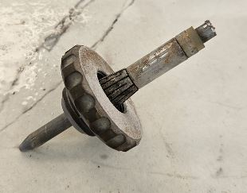
Replace the focuser with a new component, retaining the spacer
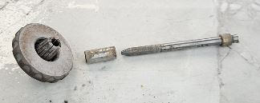
Reassemble and screw the ring nut back on after inserting the new component
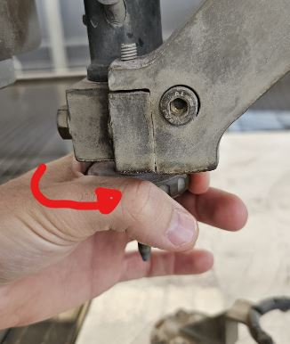
Reinstall the slab probe
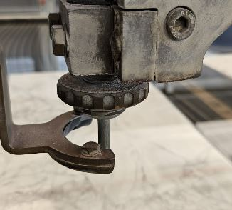
Perform nozzle probing to set the correct “Delta Z” value
Video
Before proceeding, carefully read the | |
Intervalevery 1000 working hours | Operation complexityMedium03 / 05 |
Authorized personnelMachine operator | Required PPE:  |
Rotate axis A to 90_ to access the closure on the head
Remove the guard
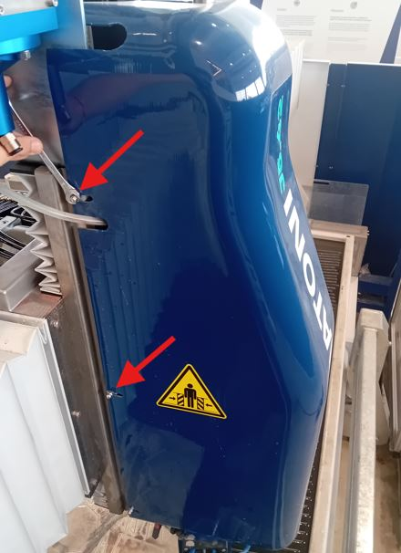
Remove the protective guard under the head
Remove the hose clamp
Pull the hose out from below, noting its routing; the new hose must be routed along the same path
Insert the new abrasive hose
Secure the hose with the dedicated fastener
Close the guards, taking care with the cables under the head
Video
Before starting any installation, setup or maintenance operation, carefully read ALL instruction manuals, documents and guides supplied with the machine.
The person carrying out the operation is solely responsible for the correct operation and maintenance of the machine.
Donatoni Macchine expressly declines all liability for any injury (including death) or damage to equipment or other property caused by improper use or maintenance of the machine, as well as for failure to comply with the procedures set out in the equipment instruction manual or in any other safety material or procedure. If you encounter any problems or difficulties, we strongly recommend contacting Donatoni Macchine or your reference service centre.
Safety is a priority. If you have any questions, do not hesitate to contact Donatoni Service at the following contacts:
T: _39 045 6862899
WhatsApp: _39 045 7740052
Telegram: @donatonimacchine_bot📞